温泉コース
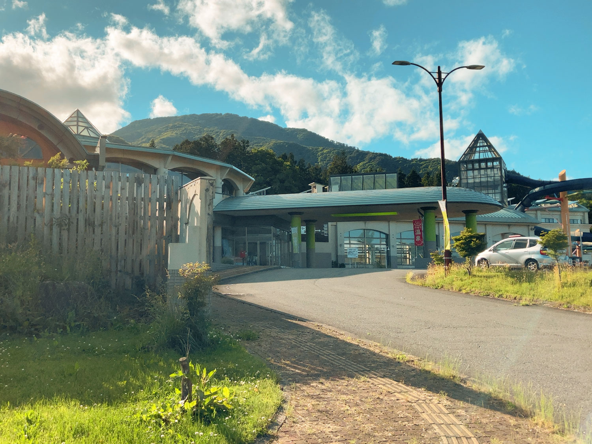
紫波の名湯「ラフランス温泉館」を目指しながら、西地区の歴史を感じるスポットを見て楽しめるコースです。
東根山をはじめとした山々に限りなく近い温泉で、唯一無二のリフレッシュをどうぞ。
移動時間
約130分
※滞在時間を除く
このコースの移動範囲：西エリア
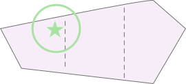
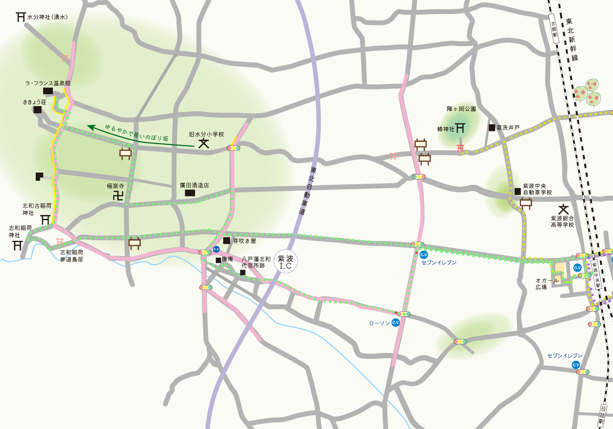
移動時刻シミュレーション
※サイクリング推奨時間帯9:00〜18:00
（▼時計クリックで時刻選択）
に出発！
※滞在時間は含まれませんので、大まかな目安としてお使いください。
※下記のブラウザ以外では動作しないことがあります。
- PC(Google Chrome, Microsoft Edge)
- スマートフォン(Safari, Google Chrome)
①スタート：紫波中央駅
10分
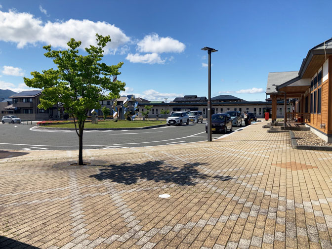
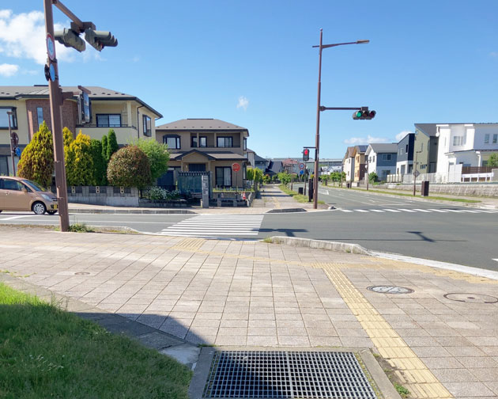
その名の通り、紫波の中央にある駅の前から出発。
正面から出て信号を右折。次の信号（写真２枚目）で左折したらそのまままっすぐ進みます。
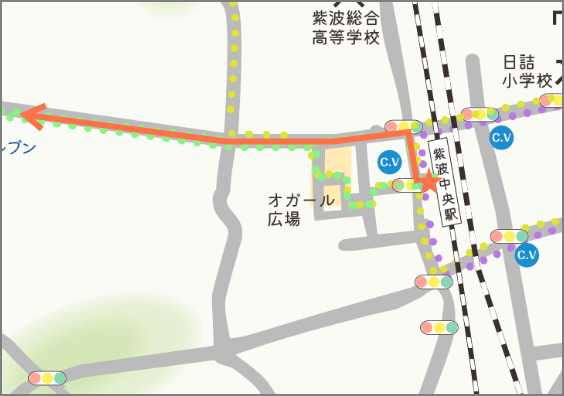
②信号交差点：セブンイレブン
10分
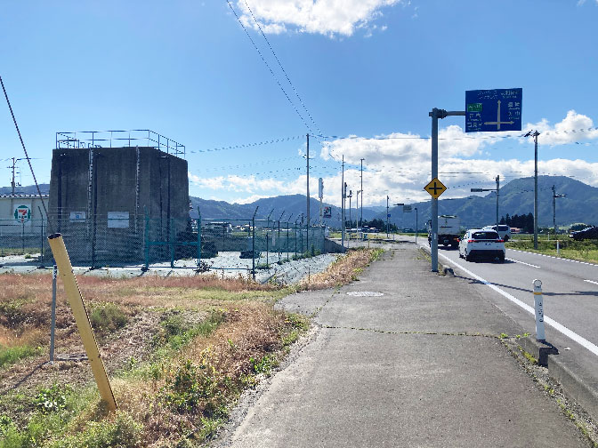
まっすぐ進んでいると、左手にセブンイレブンの看板が見えます。ここの信号交差点も、まっすぐ進みます。
正面の「東根山」を眺めながらゆったり進んでいきます。
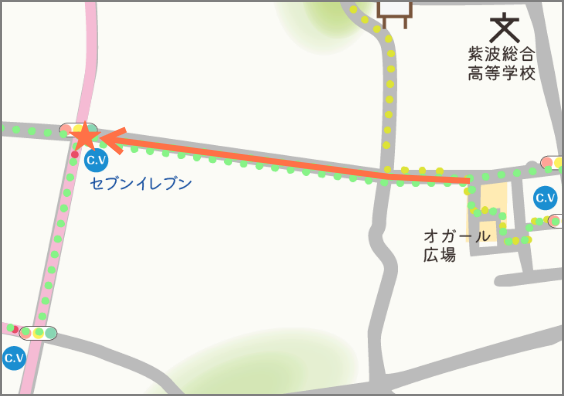
③東北自動車道
10分
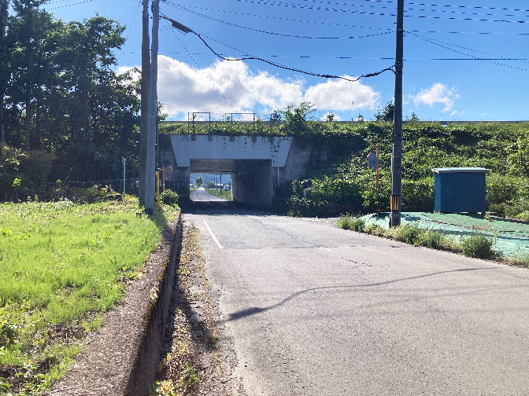
まっすぐ進む途中で「東北自動車道」の高架下のトンネルが見えてくるので、くぐって通過します。
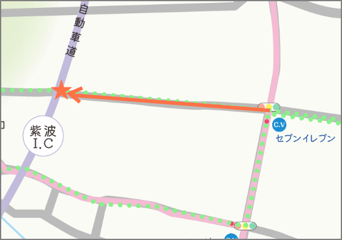
④芽吹き屋（＆江釣子屋）
12分
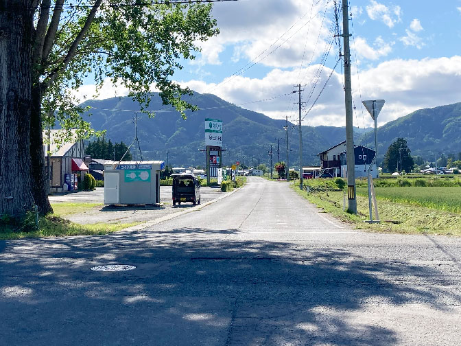
トンネルをくぐった先には、県内の銘菓店「芽吹き屋」と海鮮丼のお店「江釣子屋」が併設された店舗が見えてきます。
※⑭で再度通る場所なので、最初に寄るもよし、後で食べに来るもよし！
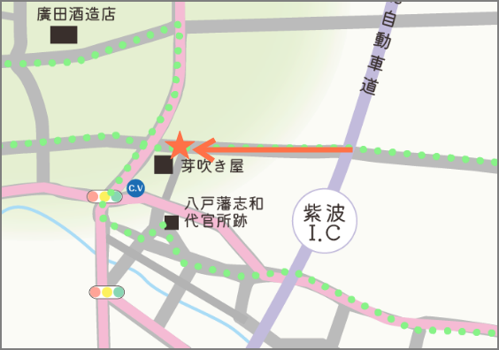
⑤「野沢堰・八戸盛岡藩境・安倍道交差点」解説板
8分
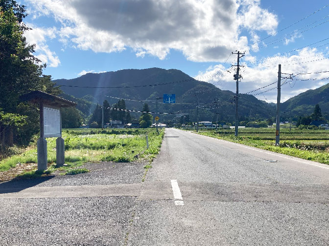
今までと同じ方向にまっすぐ進むと、左手に「野沢堰・八戸盛岡藩境・安倍道交差点」の解説板があります。
解説板には、ここが江戸時代の八戸藩と盛岡藩の境目であることや、かつてこの周辺地域に起きていた「水けんか（農業用水をめぐる激しい水争い）」について詳しく書かれています。実際の起点にいながら、西地区の歴史の一つを知られる、重要な資料です。
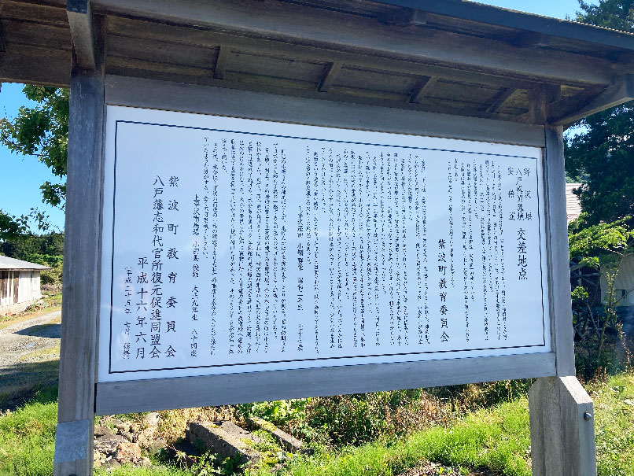
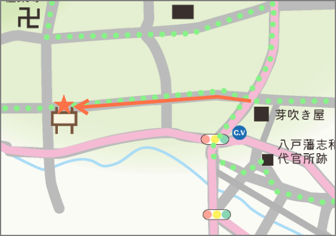
⑥志和稲荷参道鳥居
5分
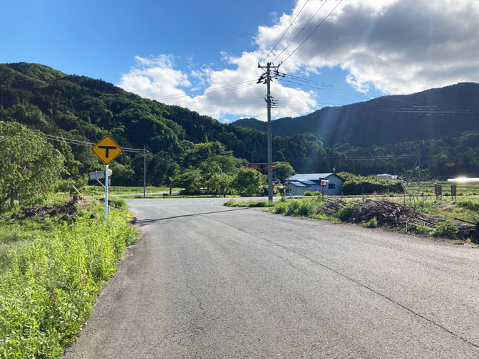
再び今までと同じ方向へ進むと、T字路に当たります。この道路を超えた先に、「志和古稲荷神社」や「志和稲荷神社」の看板が側に立つ道路の入り口が見えるので、そちらへ目指します。
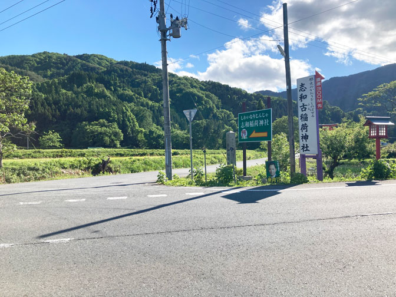
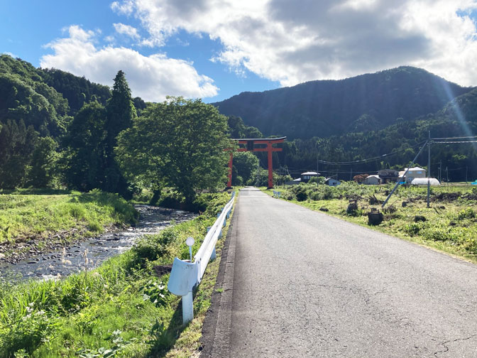
そのまままっすぐ進むと、道路をまたぐ大きな「志和稲荷参道鳥居」が！
側に流れる川や周りの山々と鳥居が一体化した美しい景色を楽しみながら通り抜けられます。
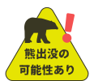
※ここからは自然の多い地域となり、熊出没の可能性が高まります。立ち寄りの際は、熊トラブルガイドをご確認のうえ、十分注意して通行ください。
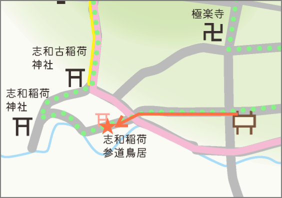
⑦志和稲荷神社
3分
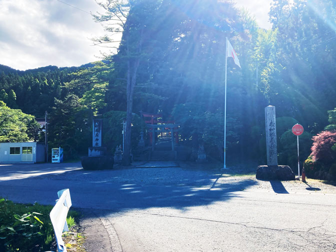
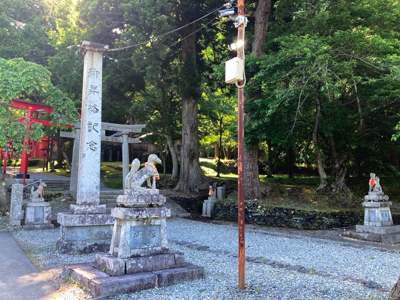
鳥居をくぐり抜けた先に、「志和稲荷神社」があります。
入り口手前には、⑤の解説板にも書かれていた「水けんか」による争いの影響で耳が欠けたと言われる、有名なお稲荷さんの像が並びます。
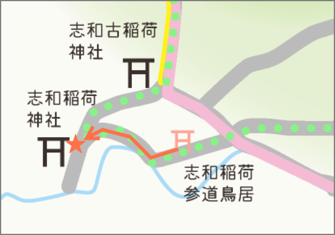
⑧志和古稲荷神社
10分
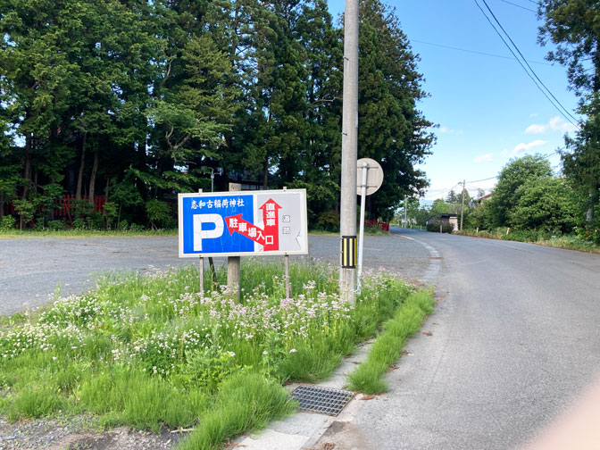
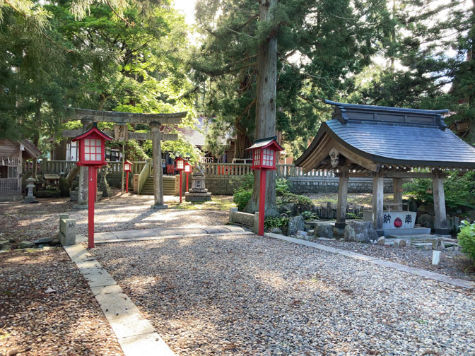
⑦の志和稲荷神社から北側の道路へ道なりに進むと、左手に神社の駐車場の看板が見えてきます。
さらに進むと、「志和古稲荷神社」の入り口があり、そこから中に入ることができます。
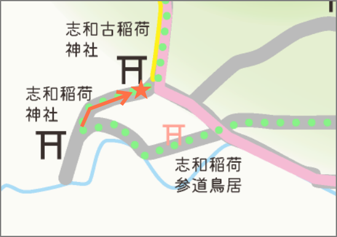
⑨里の山食堂
5分
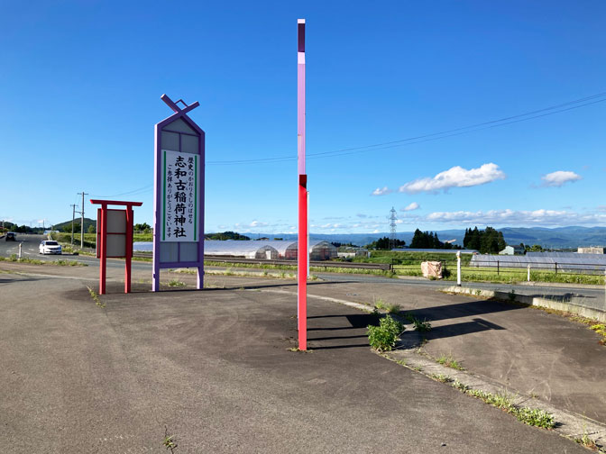
来た道から同じ方向に進んでいくと、県道162号道路へ合流するので、左折して北上します。
まっすぐ進む途中、左手に「里の山食堂」が見えます。店舗の脇には「武田家住宅※」と呼ばれる町指定有形文化財の「曲り家」に続く道の入り口も。
※現在も居住者のいる個人宅につき、見学は外観のみとされています。
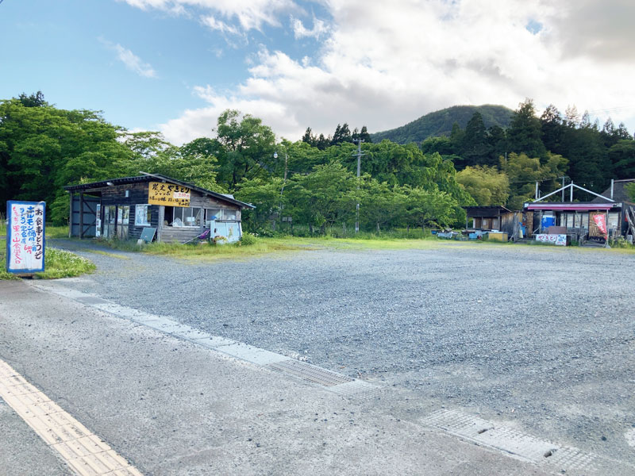
TIPS
やきとり、ホルモン、とんかつなどスタミナ満点の肉料理店。道中でお腹が空いたら要チェック！
※営業時間は11:00～13:30、16:30～19:00（木は定休日）なので、時間帯に注意！
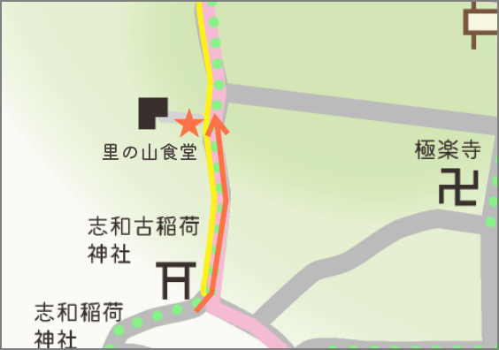
⑩ラ・フランス温泉館
5分
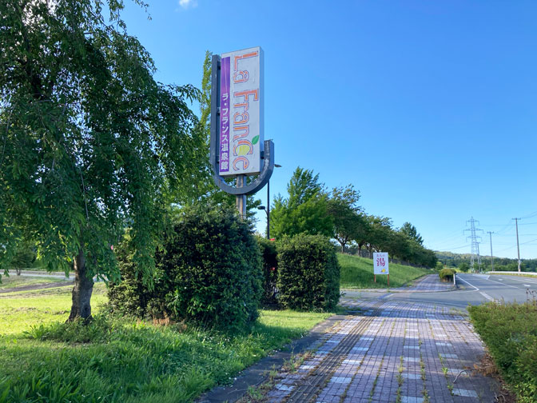
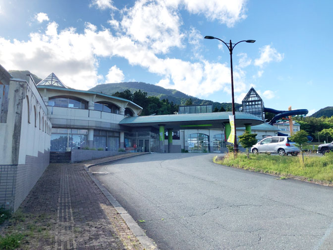
北へまっすぐ向かう途中で、左手に「ラ・フランス温泉館」の看板が見えたら温泉館の入り口です。
紫波町の代表的な天然温泉施設で、洋風・和風の多形式の風呂やサウナ、露天風呂まで完備され、様々な効能を発揮します。
ここまで約70分の自転車旅の後に浸かる温泉は、格別な爽快感を得られること間違いなく、イチ押しです！
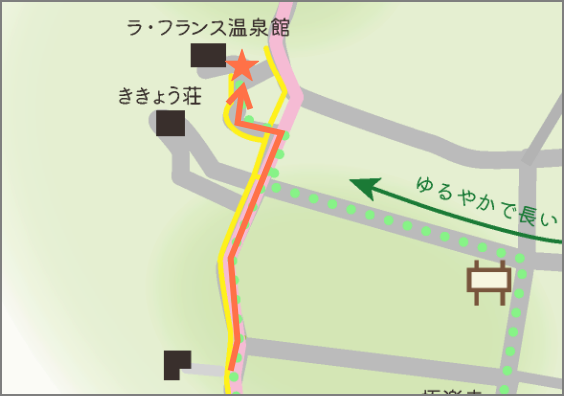
⑪極楽寺案内標識
5分
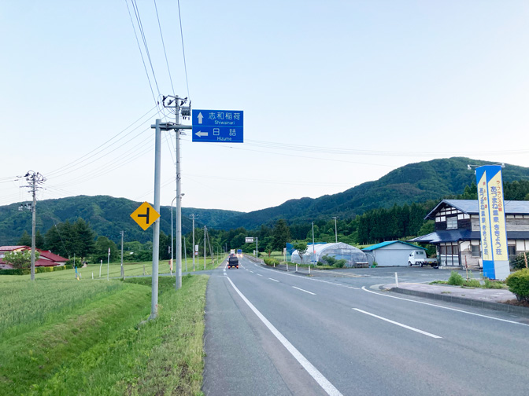
ラフランス温泉館の入口と同じ道から県道162号道路へ出ます。
途中で日詰行きのT字路があるので、左折します。
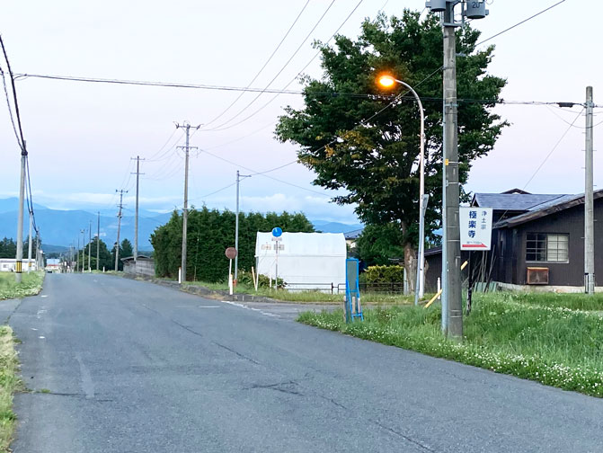
まっすぐ走ると、右手に「極楽寺案内標識」が見えるので、そこで右折します。
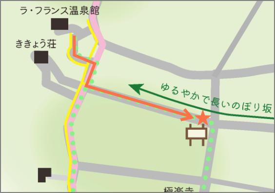
⑫極楽寺
5分
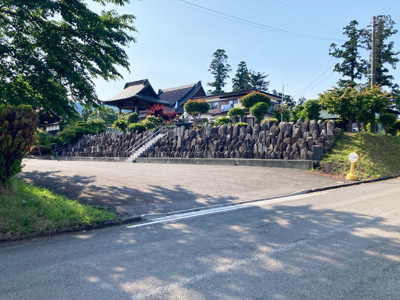
まっすぐ進む道中の右手に、「極楽寺」があります。
付近の十字路に来たら、左折して次の目的地に向かいます。
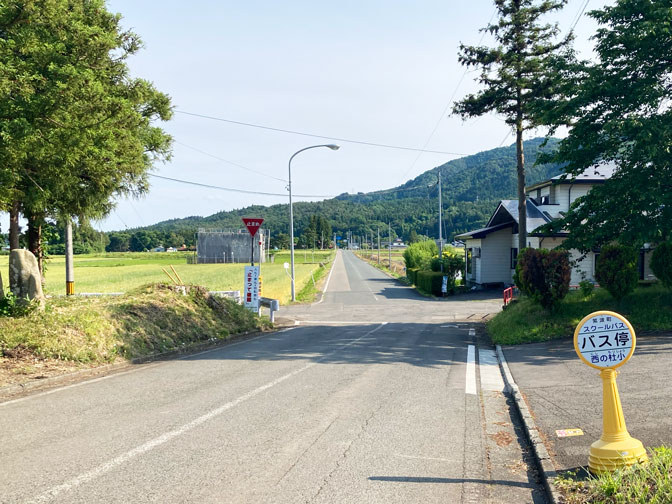
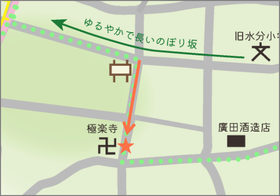
⑬廣田酒造店
5分
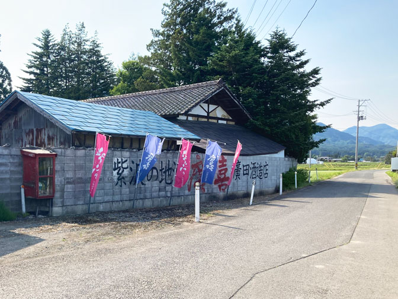
道中の左手に、「廣田酒造店」があります。
「南部杜氏発祥の里」として知られる紫波の、代表的な老舗酒造店です。
日本酒の購入はもちろん、蔵見学（要予約）をすることもできます。
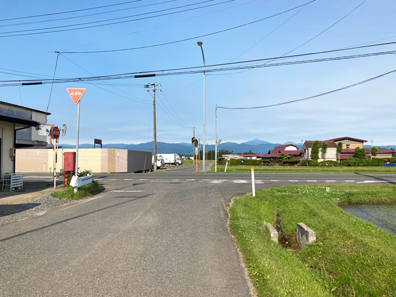
酒造店を通り過ぎると、十字路に当たるので、右折して進みます。
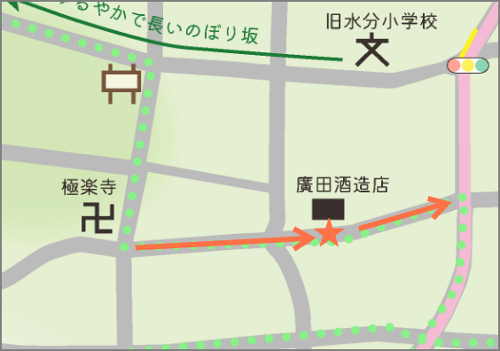
⑭芽吹き屋（＆江釣子屋）
5分
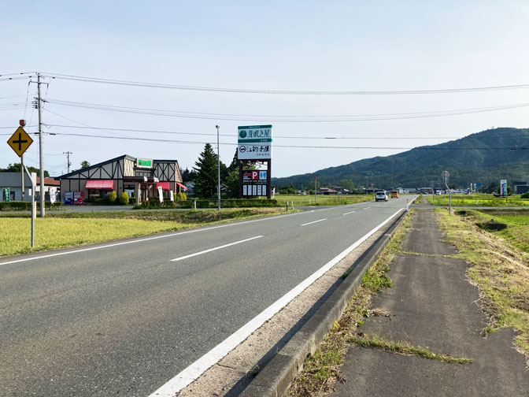
進む途中で「芽吹き屋（江釣子屋）」の建物が見えてきます。
十字路を左折すれば、ここで団子やジェラート、丼ものや定食などの食事で一服できます。
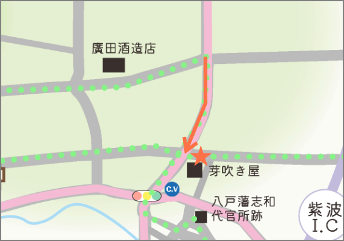
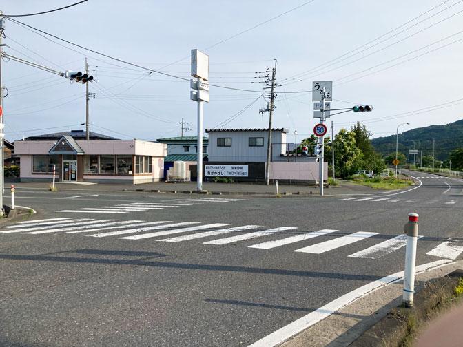
TIPS
※「たかのはし」営業時間は10:30〜14:00（木土日は定休日）と限られているので、気になる方は出発日と時間に要注意！
先ほどの道をまっすぐ進むと、次の十字路の左手にうどんのお店「たかのはし」があり、ここでコシのある手打ちうどんを楽しむことができます。
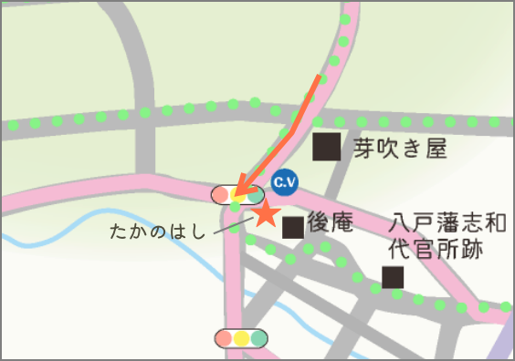
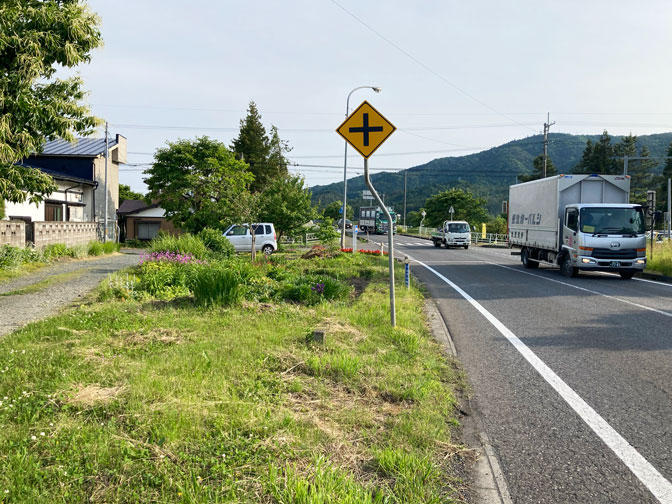
先ほどの十字路を直進して次の十字路を左折します。
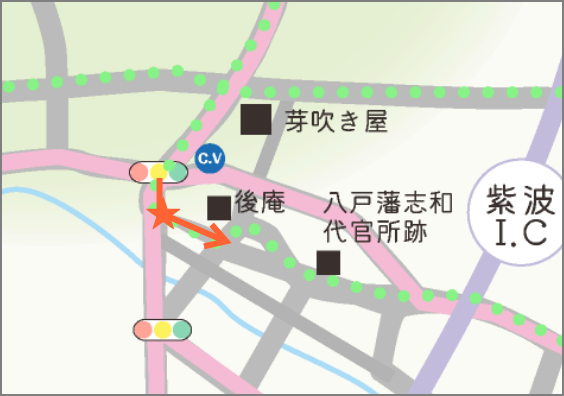
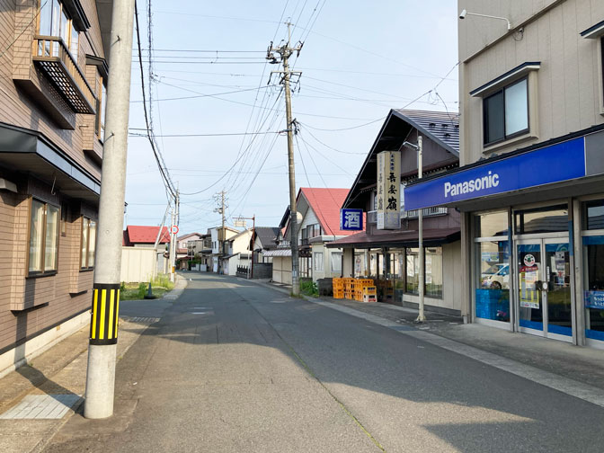
様々な店舗の並ぶ道の中に、「Panasonic」「吾妻峰」の看板のあるお店があるので、その向かい側のT字路を左折します。
途中で左手に「後庵」の看板のある十字路があるので、そこを右折します。
TIPS
「お食事処 後庵」は、そばを中心にラーメンや丼ものなどのメニューのあるお店。お腹が空いた時の立ち寄り所の一つとして、要チェック！
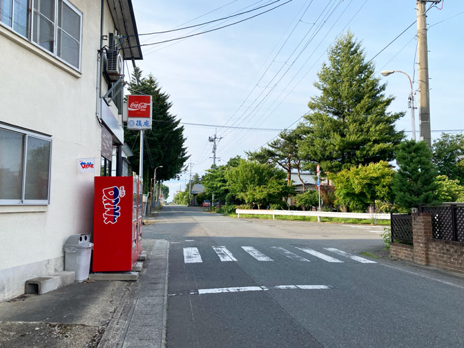
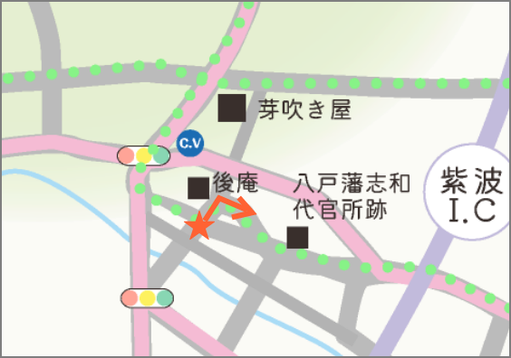
⑮八戸藩代官所跡・南部杜氏発祥の地石碑
5分
道なりに進むと、左手に「南部杜氏発祥の地石碑」があります。
⑯東北自動車道・紫波インター入口
10分
直進していると、紫波インター入り口の手前で県道162号道路の合流地点に当たります。ここを左折してすぐ右折し、162号線を直進します。
⑰信号交差点（ローソン）
5分
途中で、右手にローロンのある十字路があるので、ここを左折します。
⑱信号交差点（セブンイレブン）
10分
まっすぐ進んでいると、右手にセブンイレブンのある交差点に当たるので、ここで右折します。
⑲紫波町役場・オガール広場
3分
直進する途中に、右手に紫波町役場の建物が見える十字路があります。ここを右折し、公園の手前のT字路で左折。役場庁舎手前で右折し、オガール広場の通りに入ります。
⑳ゴール：紫波中央駅前
オガール広場を通り抜けた先の交差点を直進すれば、紫波中央駅へゴール！